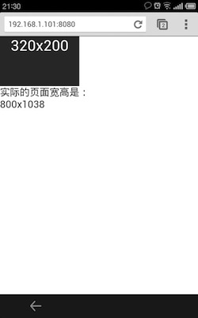
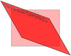

What's new in HTML5
- Semantic Elements, Attributes
- Canvas, SVG
- CSS3
- Video, Audio
- Storage
- Online, Connection
- Web Worker, File Operation
-
etc.
注意：请使用 Chrome 浏览，因为很多地方我并没有针对Firefox, Opera开发
Outline
- 移动端开发
- CSS3
- Application Cache
注意： 这绝对不是一个完整的HTML5的介绍，有机会的话或许会慢慢补齐。
其实如果完整的去学习一套理论，对谁都是一个很大的负担。我只是希望大家看过这些介绍之后，能确实有所获得，那么在以后的学习中，能带着一些思考去学习，可能效果会更好。
我刚开始学习JavaScript的时候，看的JavaScript: the Definitive Guide。
但是事实证明，当时选择那本书绝对是不明智的，事实上我也没能坚持看完，
看了几十页就不看了。在做了不少的项目和一些历练之后，我回过头再去看这
本大而全的书的时候，体会则完全不一样了，会有一种融会贯通的感觉。
I. 移动端的开发
Viewport
一个典型的优化过的移动端站点通常含有这样的一个属性：
<meta name="viewport" content="width=device-width, initial-scale=1, maximum-scale=1">
Viewport的属性共有7种：
- width = [ 像素值 | device-width ]
- height = [ 像素值 | device-height ]
- initial-scale = Float Number(如 1.0 / 1 / 0.5)
- minimum-scale = Float Number(如 1.0 / 1 / 0.5)
- maximum-scale = Float Number(如 1.0 / 1 / 0.5)
- user-scalable = [ yes | no ]
- target-densitydpi = [ DPI值 | device-dpi| high-dpi | medium-dpi | low-dpi ]
设置 width=device-width
<meta name="viewport" content="width=device-width, initial-scale=1, maximum-scale=1">
竖屏 横屏
设置 width=320
<meta name="viewport" content="width=320">
竖屏 横屏
注: 我的经验中，设置了固定的width以后，scale相关属性一般不生效
设置 scale
initial-scale= Float Number(如 1.0 / 1 / 0.5)minimum-scale= Float Number(如 1.0 / 1 / 0.5)maximum-scale= Float Number(如 1.0 / 1 / 0.5)user-scalable= [ yes | no ]
设置DPI
CSS pixel与device pixel
- CSS pixel： 浏览器使用的抽象单位， 主要用来在网页上绘制内容。
- device pixel： 显示屏幕的的最小物理单位，每个dp包含自己的颜色、亮度。
每个CSS pixel所含有的device pixel不是固定的，一般来说
1 CSS pixel = devicePixelRatio^2 个device pixel
PPI/DPI
PPI，有时也叫DPI，所表示的是每英寸所拥有的像素（pixel）数目，数值越高，即代表显示屏能够以越高的密度显示图像。
注：这里的像素，指的是device pixels。
PPI准确的计算公式：
常见的一些屏幕尺寸和对应的 DPI
实际设置了target-densitydpi之后的页面:
<meta name="viewport" content="target-densitydpi=device-dpi,width=device-width, initial-scale=1,maximum-scale=1">

通过Media Query实现不同屏幕加载不同的CSS
.header {
background:url (medium-density-image.png);
}
@media screen and (-webkit-device-pixel-ratio:2.0) {
.header { background:url (retina-density-image.png);} /* CSS for retina-density screens */
}
@media screen and (-webkit-min-device-pixel-ratio:1.5) and (-webkit-max-device-pixel-ratio:1.99){
.header { background:url (high-density-image.png);} /* CSS for high-density screens */
}
@media screen and (-webkit-max-device-pixel-ratio:0.75) {
.header { background:url (low-density-image.png);} /* CSS for low-density screens */
}
- 注1：使用了target-densitydpi属性以后，所有的Media Query的数值会产生改变
- 注2：更多的 Media Query 稍后再详细介绍
- 注3：其实对于图片的处理，已经有更为优美的解决方案--响应式图片
Orientation
移动端用户有的时候会开启自动旋转，需要考虑旋转之后的布局等安排 一般说来，处理的方式有两种：
-
JavaScript
-
Media Query
Orientation - JavaScript
可以通过JavaScript来监控屏幕转动
window.onorientationchange = function() {
/*Do Something*/
};
// 或者使用jQuery
$(window).on("orientationchange", function() {
/*Do Something*/
});
同时，还有一个属性:
window.orientation 表明当前旋转的角度
0 / 90 / -90 / 180
Orientation - Media Query
如果仅仅是跟布局相关的，通过Media Query或许是最好的选择
@media (orientation: portrait) {
/* Some CSS for portrait */
}
@media (orientation: landscape) {
/* Some CSS for landscape */
}
Orientation - Media Query
其实很多时候使用Media Query，很多时候也不需要考虑是横向还是纵向。 只需要针对宽度做适配即可：
@media screen and (max-width: 479px) {
/* Some CSS for Width < 480 */
.desc { background: yellow; }
}
@media screen and (min-width: 480px) and (max-width: 639px) {
/* Some CSS for 480 <= Width < 640 */
.desc { background: blue; }
}
@media screen and (min-width: 640px) and (max-width: 1023px) {
/* Some CSS for 640 <= Width < 1024 */
.desc { background: green; }
}
@media screen and (min-width: 1024px) {
/* Some CSS for Width >= 1024 */
.desc { background: red; }
}
移动设备上的效果
@media screen and (max-width: 479px) {.desc { background: yellow; } }
@media screen and (min-width: 640px) and (max-width: 1023px) {.desc { background: green; } }
400x519 640x327
电脑上的效果
@media screen and (min-width: 1024px) {.desc { background: red; } }
简单的Retina屏幕优化方案
前文中讲到通过 target-densitydpi 改变 devicePixelRatio 来优化retina屏幕显示。 但是实际操作中，这样会非常吃力。
实际上，目前也没有一个权威的并且成熟的解决方案。（我还没找到）
各种方案也是百花齐放，我这里只介绍一种我自己的解决方案（绝对不是最好的方案），
有兴趣的同学可以多些了解关于 **响应式图片** 相关的内容。
背景图片
.header { background-image:url(http://path/of/pic/normal.png);
/* 普通屏幕 */
/* ------------ Retina ------------ */
@media only screen and (-o-min-device-pixel-ratio: 2/1), /* Opera */
only screen and (min--moz-device-pixel-ratio: 2), /* Firefox 16 之前 */
only screen and (-webkit-min-device-pixel-ratio: 2), /* Webkit */
only screen and (min-resolution: 240dpi), /* 标准 */
only screen and (min-resolution: 2dppx) /* 标准 */ {
.header {
background-image:url(http://path/of/pic/large.png);
background-size: 50% 50%;
}
}
图片
<img data-src="http://path/of/pic/normal.png"
data-src-2x="http://path/of/pic/large.png" width="400px" height="300px"/>
<script type="text/javascript">
$('img[data-src-2x]').each(function() {
if (window.devicePixelRatio === 2) {
// this.src = this.dataset.src2x;
this.src = $(this).attr("data-src-2x");
}else {
// this.src = this.dataset.src;
this.src = $(this).attr("data-src");
}
});
</script>
Online & Connection
navigator.onLine
如果需要判断当前手机是否联网，其实很简单。。。
通过 JavaScript 判断 navigator.onLine：返回值 true / false
<button id="intro-online">点我查看是否在线！</button>
<script type="text/javascript">
var onlineBtn = document.getElementById("intro-online");
onlineBtn.addEventListener("click", function() {
if (navigator.onLine) alert("ONLINE!");
else alert("OFFLINE!");
});
</script>
同时还有两个 JavaScript的 Events: ononline, onoffline
navigator.connection
Android 2.2+ 以后的内置Webkit中：
navigator.connection = {
"type": "4",
"UNKNOWN": "0",
"ETHERNET": "1",
"WIFI": "2",
"CELL_2G": "3",
"CELL_3G": "4"
}
navigator.connection
我们可以写出类似于这样的代码：
if (navigator.onLine) {
var connection = navigator.connection || navigator.webkitConnection ||
navigator.mozConnection || {type: 0};
switch(connection.type) {
case connection.CELL_3G: // 3G
connectionSpeed = 'mediumbandwidth';
break;
case connection.CELL_2G: // 2G
connectionSpeed = 'lowbandwidth';
break;
default: // WIFI, ETHERNET, UNKNOWN
connectionSpeed = 'highbandwidth';
}
}
注：ECMAScript 5中有不同的定义，而且在目前的手机Chrome上无效果
Semantics
新的元素，含有语意的元素等
Form
<style>
[required] {border-color: #88a; -webkit-box-shadow: 0 0 3px rgba(0, 0, 255, .5); }
:invalid {border-color: #e88; -webkit-box-shadow: 0 0 5px rgba(255, 0, 0, .8); }
</style>
<input type="text" required />
<input type="email" value="zhang.gd@foxmail.com" />
<input type="date" min="1988-01-01" max="2013-12-12" value="2013-02-22"/>
<input type="range" min="0" max="50" value="10" />
<input type="search" results="10" placeholder="搜索..." />
<input type="tel" placeholder="021-22228888" pattern="^\d{3,4}[-\s]\d{8}$" />
<input type="color" placeholder="e.g. #bbbbbb" />
<input type="number" step="1" min="-5" max="10" value="0" />
Form表单的type对键盘的影响
Progress & Meter
通过HTML5的标签实现进度类的有的时候显得非常简单……
<meter min="0" max="100" low="40" high="90" optimum="100" value="91">A+</meter>
<progress value="75" max="100">3/4 complete</progress>
<progress></progress>
datalist
<input list="names"/>
<datalist id="names">
<option value="Abe"/>
<option value="Carl"/>
<option value="David"/>
<option value="Joe"/>
<option value="Mac"/>
<option value="Michael"/>
<option value="Peter"/>
</datalist>
移动端调试
强烈推荐：
Apache: weinre
小结
这里介绍了移动端的viewport，orientation，以及一些新的HTML5元素，属性。
移动端必然是一个趋势，
相关的开发这里只是一个抛砖引玉，
还是需要在持续的使用中总结和尝试。
II. CSS3
CSS3引入了非常多有趣的技术和效果。
我们这里挑出一些比较成熟的，
有代表性的来一起看看。
其中有些可能大家已经很熟悉了，
这里还是做一次回顾。
Border
.round {
border-radius: 30px;
-o-border-radius: 30px;
-ms-border-radius: 30px;
-moz-border-radius: 30px;
-webkit-border-radius: 30px;
}
Gradient
渐变效果很多时候可以替代早先图片background实现的效果。 而对于IE，如果不支持的渐变的，则使用 纯色/背景图片平铺/filter 即可。（Trade-off）
-webkit-gradient(type, start_point, end_point, from, to, / stop...);
-webkit-gradient(type, inner_center, inner_radius, outer_center, outer_radius, from, to, / stop...)
type: 渐变的类型，可以是线性渐变(linear)或是径向渐变(radial)start_point: 渐变图像中渐变的起始点end_point: 渐变图像中渐变的结束点stop: color-stop()方法，指定渐变进程中特定的颜色inner_center: 内部中心点，径向渐变起始圆环inner_radius: 内部半径，径向渐变起始圆outer_center: 外部渐变结束圆的中心点outer_radius: 外部渐变结束圆的半径from: 渐变起始点的颜色to: 渐变结束点的颜色
Gradient
.bg {
background: -webkit-gradient(linear, left top, left bottom,
from(#00abeb), to(white),
color-stop(0.5, white), color-stop(0.5, #66cc00))
}
.bg2 {
background: -webkit-gradient(radial, 430 50, 0, 430 50, 200, from(red), to(#000))
}
Shadow
阴影效果非常的炫丽，实现效果其实也很简单。
text-shadow: color x-offset y-offset radius
-webkit-box-shadow: color x-offset y-offset radius
color: 颜色x-offset: 阴影横向的位移y-offset: 阴影纵向的位移radius: 阴影半径
.sh {
text-shadow: rgba(64, 64, 64, 0.498039) 0px 0px 5px;
-webkit-box-shadow: rgba(0, 0, 128, 0.247059) 0px 0px 8px;
}
阴影样例
Transition
通常实现页面的动画效果都是通过 JavaScript 的setInterval 或者 setTimeout 控制CSS值的变化来实现一个连贯的动作。 CSS3则是直接提供了这么一个非常简单的属性，省去了JavaScript的工作。
-webkit-transition: property time function delay
- property: 具体对哪个属性进行 transition，可以是 all
- time: 动画执行的时间
- function: 动画的效果， ease/linear/ease-in/ease-out/ease-in-out/cubic-bezier(n,n,n,n)
- delay: 延迟执行的时间
Transition
#box {
-webkit-transition: left 2s ease;
}
#box.left {
left: 0px;
}
#box.right {
left: 920px;
}
监测Transition结束
动画完成后，我们往往要继续进行一些操作，或者继续动画。这时就需要监测Transition的结束了。这里介绍两种方法：
方法一： setTimeout
最传统也最简单的方法应该就是这个 setTimeout 了。大家也知道这个使用的方法：
setTimeout(function() {
// do something here
}, 1000)
监测Transition结束
方法二：onTransitionEnd
var myDiv, transition;
myDiv = document.getElementById('demo');
if('ontransitionend' in window) {
transition = 'transitionend'; // Firefox
} else if('onwebkittransitionend' in window) {
transition = 'webkitTransitionEnd'; // Chrome/Safari (+ Mobile Safari)/Android
} else if('onotransitionend' in myDiv || navigator.appName == 'Opera') {
// 在Opera 10.61, DOM元素中不存在"onotransitionend" 属性, 所以转而判断appName是否为Opera
transition = 'oTransitionEnd';
} else {
transition = false; // 无视IE吧
}
myDiv.addEventListener(transition, function(){
//alert(Date.now() + ' transition end!');
}, false);
Transform
Transform提供了强大对于既有元素变形的能力。它拥有若干函数可以操作元素。 甚至包括了一些3D方法，这里就只讲一些2D的功能。对于3D有兴趣的同学，可以私下交流～
div {
transform: rotate(30deg);
-ms-transform: rotate(30deg); /* IE 9 */
-webkit-transform: rotate(30deg); /* Safari and Chrome */
-o-transform: rotate(30deg); /* Opera */
-moz-transform: rotate(30deg); /* Firefox */
}
translate()
给定x,y值，挪动当前元素的位置

div {
-webkit-transform: translate(50px,100px);
}
rotate()
给定角度，旋转当前元素

div {
-webkit-transform: rotate(30deg);
}
scale()
给定横轴和纵轴，放大当前元素
div {
-webkit-transform: scale(2,4);
}
skew()
给定X轴角度和Y轴角度，将X轴，Y轴顺时针旋转

div {
-webkit-transform:skew(30deg,20deg);
}
matrix()
将所有的Transform方法集中到一起，含有6个参数：
(a, b, c, d, tx, ty)
matrix 涉及到矩阵运算，有兴趣的同学可以看下此文：
http://dev.opera.com/articles/view/understanding-the-css-transforms-matrix/，
当然前提是你线性代数没忘……

div {
-webkit-transform:matrix(0.866,0.5,-0.5,0.866,0,0);
}
与transition的一起使用
transform与transition一同使用的时候，我们可以制造出许多原本在浏览器上无法实现的动画效果！
.box {
-webkit-transform: rotate(10deg);
-webkit-transition: -webkit-transform 2s ease-in-out;
}
.box:hover {
-webkit-transform: rotate(-10deg);
}
Hover on me!
Animation
Animation可以说是一个大杀器了，
通过设定不同的阶段的状态，然后再设置Animation的一些属性，
则可以非常轻松的完成一系列的动画效果。
学习animation首先需要了解一下 `keyframes`。
keyframes
与大部分CSS3属性一样，又是各种前缀……
@keyframes somename {
/*some definition*/
}
@-o-keyframes somename {
/*some definition*/
}
@-moz-keyframes somename {
/*some definition*/
}
@-webkit-keyframes somename {
/*some definition*/
}
keyframes
keyframes实际上是定义每个阶段的状态，有这样的一些关键词：
from, to, 0%, 25%, 100%
from 与 0%, to 与 100% 是相同的，百分比表示动画进行到百分比的时间时的状态。
@-webkit-keyframes simple {
from { background: red }
to { background: yellow }
}
@-webkit-keyframes complex {
0% {-webkit-transform: rotate(0deg);left:0px;}
25% {-webkit-transform: rotate(20deg);left:0px;}
50% {-webkit-transform: rotate(0deg);left:800px;top:50px;}
55% {-webkit-transform: rotate(0deg);left:800px;top:50px;}
70% {-webkit-transform: rotate(0deg);left:800px;top:50px;background:#1ec7e6;}
100% {-webkit-transform: rotate(-360deg);left:0px;}
}
Animation Properties
Animation的属性需要指明它需要使用哪个keyframes, 一般来说第一个参数就是指定的那个keyframes的名称。如下：
@-webkit-keyframes simple {
from { background: red }
to { background: yellow }
}
.box {
animation: simple 5s;
-o-animation: simple 5s; / Opera /
-moz-animation: simple 5s; / Firefox /
-webkit-animation: simple 5s; / Safari and Chrome /
}
Animation
Animation含有较多的属性：
- animation-name: 指定的 keyframe 名称
- animation-duration: 动画持续时间
- animation-timing-function: 动画时间函数
- animation-delay: 动画延迟开始的时间
- animation-iteration-count: 动画执行次数 1/2/infinite
- animation-direction: 动画执行方向 normal/alternate
- animation-play-state: 动画播放状态 paused/running
Animation
所以相比于简化版的 -webkit-animation，animation的属性还可以这样更加详细的指定：
.box {
-webkit-animation-name: complex;
-webkit-animation-duration: 5s;
-webkit-animation-timing-function: ease;
-webkit-animation-delay: 2s;
-webkit-animation-iteration-count: infinite;
-webkit-animation-direction: alternate;
-webkit-animation-play-state: running;
}
SDO
监测Animation End
与 transitionEnd 类似，可以通过setTimeout来处理，各浏览器也有对应的事件：
- animationEnd
- oAnimationEnd
- webkitAnimationEnd
Media Query
在前面的篇章中，
我们已经使用到了媒体查询的属性。
可以说这个是当下比较热门的技术解决方案了。
这里对此做一个基本的介绍。
使用方法
Media Query的引用语法有几种，可以根据需求和代码的风格来处理：
inline
@media screen and (min-width: 1024px) {
/* Some CSS for Width >= 1024 */
.desc { background: red; }
}
link
<link rel="stylesheet" media="only screen and (max-device-width:360px)" href="mobile360.css" type="text/css" />
使用方法
style+import
<style type="text/css" media="screen and (min-width:1440px)">
@import url("huge.css");
</style>
实际操作中，还是推荐使用前两种方法。
设备类型
- all：所有设备
- screen ：电脑显示器
- print：打印用纸或打印预览视图
- handheld：便携设备
- tv：电视机类型的设备
- speech：语意和音频盒成器
- braille：盲人用点字法触觉回馈设备
- embossed：盲文打印机
- projection：各种投影设备
- tty：使用固定密度字母栅格的媒介，比如电传打字机和终端
设备特性：
- width：浏览器宽度
- height：浏览器高度
- device-width：设备屏幕分辨率的宽度值
- device-height：设备屏幕分辨率的高度值
- orientation：浏览器窗口的方向纵向还是横向，当窗口的高度值大于等于宽度时该特性值为portrait，否则为landscape。
- aspect-ratio：比例值，浏览器的纵横比.
- device-aspect-ratio：比例值，屏幕的纵横比.
- color：设备使用多少位的颜色值，如果不是彩色设备，值为0
- color-index：色彩表的色彩数
- monochrome：单色帧缓冲器每个像素的字节
- resolution：分辨率值，设备分辨率值
- scan：电视机类型设备扫描方式，progressive或interlace
- grid：只能指定两个值0或1
一些浏览器各异的设备特性
设备屏幕像素比
- Webkit: -webkit-device-pixel-ratio
- Firefox: -moz-device-pixel-ratio
- Opera: -o-device-pixel-ratio
几个关键词
max & min
max 和 min 表示大于等于，小于等于：
- min-device-width: 361px 表示 if 设备宽度 >= 361px
- max-device-width: 640 表示 if 设备宽度 <= 640px
如下表示当设备宽度介于 361px 和 640px 之间应用规则 mobile640.css:
<link rel="stylesheet" media="screen and (min-device-width:361px) and (max-device-width:640px)" href="mobile640.css" type="text/css" />
几个关键词
and
and 用来表示同时符合多个表达式的情况。
<link rel="stylesheet" media="screen and (min-device-width:361px) and (max-device-width:640px)" href="mobile640.css" type="text/css" />
几个关键词
only
only 用来表明仅仅符合该Query的才引用后续的style。
一般来说，only 更多的是用来防止支持 media 属性，但不支持 Media Query的浏览器错误解析。
<link rel="stylesheet" media="only screen and (max-device-width:360px)" href="mobile360.css" type="text/css" />
几个关键词
not
顾名思义，not 的作用就是排除不符合表达式的设备
<link rel="stylesheet" media="not print (max-width:1024px)" href="mobile360.css" type="text/css" />
几个关键词
prefix- related
对于带有前缀的设备特性，涉及到的 min 和 max 关键字略有不同：
-o-min-device-pixel-ratio-o-webkit-device-pixel-ratiomin--moz-device-pixel-ratio
小结
CSS3 内容非常之多，这里只是涉及到一部分，有兴趣的话，大家可以私下再了解。
这里也顺便推荐两个小站点，挺有意思：
III. Application Cache, Storage
Application Cache
人们都认为Web应用在断网的时候就无法运行了。
但是Application Cache给出了一个否定！
可以参考这个网站：
断网的时候它照样可以打开，并且刷新页面。
只要你不清除缓存。
实际上，这不只是断网的问题，
它还从大大减少了带宽的问题，降低了服务器压力。
manifest
要激活 Application Cache，必须在 html 标签上加上一个属性 manifest。
<html manifest="example.appcache"> ... </html>
一个最简单的 manifest 将会像这样：
CACHE MANIFEST
index.html
stylesheet.css
images/logo.png
scripts/main.js
manifest
这里有几点需要注意：
CACHE MANIFEST是必须的，且必须在第一行- 有些浏览器对于可离线存储的数据是有限制的，如果你希望使用
unlimitedStorage，参考那个浏览器的具体设定，比如 Chrome 仅允许 App 和 Extension 使用，通过设置manifest.json - 如果
manifest下载失败，浏览器将使用旧的manifest
较为复杂的 manifest
CACHE MANIFEST
CACHE:
/favicon.ico
index.html
stylesheet.css
images/logo.png
scripts/main.js
NETWORK: # Resources that require the user to be online.
login.php
/myapi
http://api.twitter.com
FALLBACK:
/main.py /static.html # static.html will be served if main.py is inaccessible
images/large/ images/offline.jpg # offline.jpg will be served in place of all images in images/large/
*.html /offline.html # offline.html will be served in place of all other .html files
更新Cache
Application Cache只有在一下情况才会更新：
- 用户清空缓存
manifest文件被修改，注意，改变manifest文件列表中的文件并不会更新缓存，只有manifest文件本身被修改才行- App Cache被用程序强制更新
var appCache = window.applicationCache;
appCache.update(); // Attempt to update the user's cache.
if (appCache.status == window.applicationCache.UPDATEREADY) {
appCache.swapCache(); // The fetch was successful, swap in the new cache.
}
Application Cache
Application Cache的更多的内容可以参考：
http://www.whatwg.org/specs/web-apps/current-work/#applicationcache
参考文献及网站：
- UI 来自于 Google IO 2012
- http://dev.w3.org/html5/html-author/
- http://www.html5rocks.com/
- https://developer.mozilla.org/en/docs/HTML
- http://diveintohtml5.info/
- http://www.w3schools.com/
- http://www.lovevoi.com/?p=166
- http://adamlu.com/?p=633
- http://www.iyunlu.com/view/Front-end/70.html
- http://iloves.org/2011/05/high-performance-mobile/
- http://blog.sina.com.cn/s/blog_6d48e77101016kzr.html
- 等等……
谢谢！
高山流水，笑谈前端风云